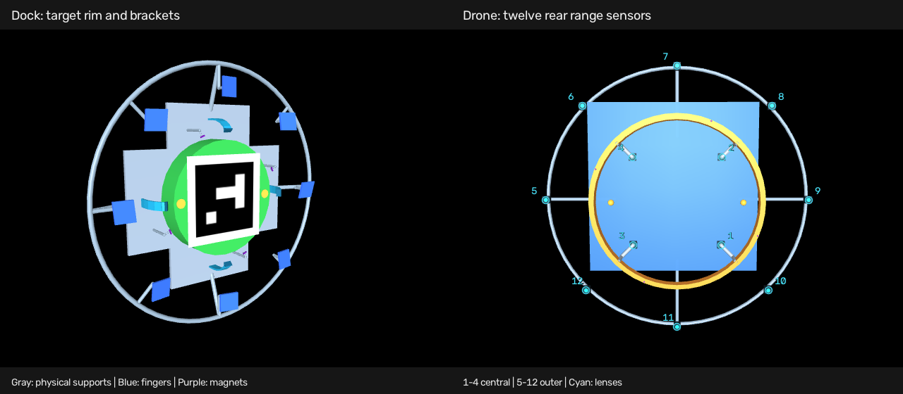
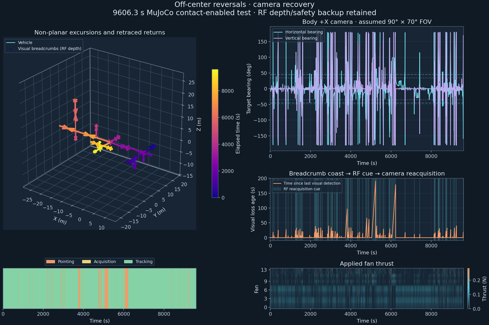
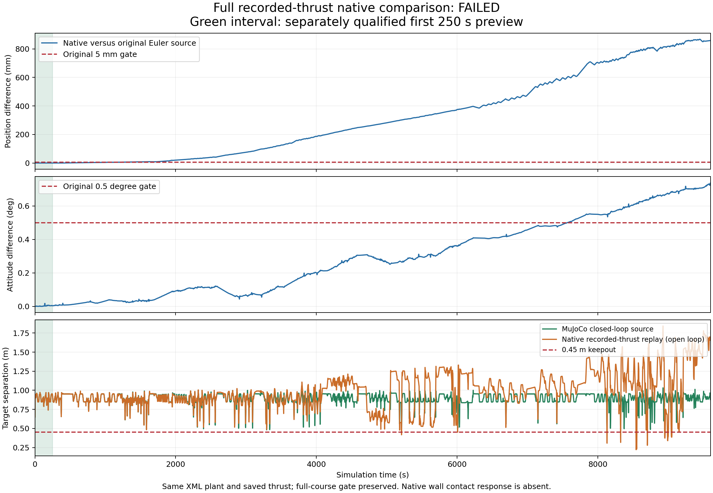

ISS chase and target recovery
Following and body-camera views with synchronized fan thrusts, clearance and pointing, acquisition and tracking telemetry. Guidance uses delayed RF measurements; camera visibility is geometric.
Sensor-driven dock, charge and undock
Rear ranges guide the blind approach. Blue fingers latch around the orange collar; charging pauses if a pole opens, then power turns off before the fingers open and the drone withdraws. Cyan lines are the rear range beams.
164.7-second closed-loop MuJoCo 4 run using camera/range/IMU estimates after an initial coordinate gauge. Zero unintended contacts; 71.82 J modeled charging, followed by verified autonomous departure. All 164,700 reconstructed 1 ms motion steps meet the phase speed and angular-rate limits.
What was checked and assumed?
Fourteen bounded fans drive the physical articulated model. This animation replays its recorded joints; camera images are re-rendered from those states. The video slows at capture and release, with the true simulation clock shown below.
Continuous twelve-range association keeps the remembered dock pose current without refreshing the camera timestamp. Bounded integral compensation counters steady contact loads without changing fan limits. Once fresh tactile switches confirm seating, the controller holds normal force and damps body rate rather than chasing pose updates. Near contact, a causal 100 ms window of central rear ranges estimates closing speed; IMU samples remain logged. Retention switches sustain seating preload while the physical latch confirms; stronger magnetic holding then supports charging. A smaller backplate, outward-routed collar supports and supported magnetic pads outside the collar give the adaptor insertion clearance; wider supported magnetic landing faces keep attraction normal to the charging surface at small offsets; all collisions remain enabled. Charging requires a fresh latch and both electrical poles at every 1 ms update. Opens receive zero current and energy; the fans stay off while the connector recovers. The cycle requires three accumulated seconds of enabled, connected current above 10 mA, rather than three elapsed seconds. Latch loss aborts; connection recovery is bounded to 5 s and the charging window to 120 s. A separate station release servo uses four ideal root encoders, a 0.26 rad opening reference and a 2.5 mNm torque cap. Departure waits for 0.5 s of settled opening and more than 2 mm hook clearance, which remains checked throughout collar withdrawal. Rear ranges hold the fingers open until the vehicle clears the adaptor. This is an explicit station-actuator upgrade; the original vehicle fan limits and finger springs remain unchanged.
Central rear ranges use ideal MuJoCo rangefinder readings; the twelve-beam pose fit adds 1 mm range noise. The 100 Hz ranging capability, IMU noise, spring material, magnetic force and charging electronics are simulation assumptions, not qualified hardware. The added frame and pole supports contribute 57.978 g under an assumed density; the original 2.7 kg nominal controller mass is unchanged. Pose uncertainty remains uncalibrated. Contact-servo commands and bounded unpowered release waits are separately audited; neither is an MPC safety certificate. This is one finite docking-only cycle, not a completed inspection mission.
Source, failed attempts and checks · Earlier ideal-pose bench and sensor layout · Earlier incomplete sensor trial
Near-dock component test: ideal pose feedback
Gray rims and brackets support the dock and twelve rear range sensors. Blue fingers flex over the orange collar; purple magnetic contacts assist capture. Charging stops before release and withdrawal.
31.6-second near-dock test using fourteen bounded fans and ideal pose feedback. Zero unintended collisions; charging and undocking checks pass. This is a recorded physical MuJoCo simulation, not validation of autonomous sensor-based docking.
Sensor positions and test assumptions

Four central lenses measure approach distance; eight outer beams observe the shaped target for lateral alignment. These are simulated range sensors, not specified radar hardware. The forward camera faces away during docking. The added sensor frame contributes about 56 g of assumed mass. Spring, magnetic and material properties are uncalibrated; structural strength and electrical hardware remain unqualified.
The sensor-driven cycle above completes docking and departure; the earlier incomplete trial remains below. This animation replays every articulated joint from the completed near-dock test. Source and review.
Earlier sensor-driven trial: incomplete
The drone approaches, then backs away when it needs a fresh dock observation. It reaches the 220-second time limit without latching or charging. Cyan lines show the rear range beams.
Zero unintended collisions; all 22,000 saved motion samples stay within the existing phase speed and angular-rate limits. The docking-cycle check fails. This recorded MuJoCo trial uses camera/range/IMU localization; its uncertainty remains uncalibrated. Camera views are re-rendered from the recorded physical states.
Magnetic capture or snap fingers?
Orange collar, blue spring fingers, purple magnetic pads. All three hold a 10 mN pull and release in this MuJoCo component test. The external vehicle shell is transparent to reveal the interface.
Applied-load bench, not autonomous flight or a charging test. Four magnetic contacts provide 60 mN nominal attraction over an assumed 8 mm range; material and magnetic properties are uncalibrated. This earlier comparison isolates matched magnetic contact pairs. The supported dock test above uses fully colliding solid pads and mounts.
Power loss, release faults and checks
The hybrid remains mechanically retained after magnetic power loss. A magnet stuck on prevents withdrawal: departure needs a release-confirmation interlock. No attachment weld; nominal contact penetration stays below 0.337 mm. Half-timestep and fourteen focused software checks pass. This approximates contact adhesion, not electromagnetic fields. The previous nonmagnetic fan-flight attempts did not complete. Source, fault cases and evidence.
Shaped dock: docking and undocking
Forward camera and external view, at 2× simulation speed. Short cyan lines show rear range beams. Eight raised facets supplement four central beams so the controller can measure sideways alignment while the dock is behind the camera.
New MuJoCo closed-loop trial: 133.2 s simulated, zero unintended contacts, then settled after undocking. This video replays that trial’s recorded physical states.
Checks and limits
All 13,320 sampled motion states pass phase limits; 318 twelve-range pose updates are accepted after release. Synthetic room, sensor and latch assumptions. Uncertainty is uncalibrated: 74/1,331 relative-pose estimates fall outside its 3σ ellipsoid. Evidence and preserved failures.
Online 3D viewpoint selection
The drone chooses a viewing position from observed free space instead of following one breadcrumb point. The station view shows the body +X facing arrow, the target and moving keepout; the XY inset magnifies the short MPC predictions and XZ shows vertical motion.
Blue points: online map-filtered viewing positions. Cyan: recorded MPC plan. Green to amber: six separately solved, constraint-checked alternatives scored against the same reference, normalized per frame. These alternatives are post-run diagnostics and were not used online.
Safety fallback: route MPC → observed-space braking MPC → command rejection if still infeasible. The recorded fallback was enabled but never triggered: 0 activations in 901 control decisions.
Custom 3D replay of a matched 90-second MuJoCo test, not native Simscape footage or a full-station qualification. Independent checks passed with zero contacts. Minimum wall clearance increased from 0.215 m to 0.364 m; target separation decreased from 0.649 m to 0.561 m, above the unchanged 0.45 m limit. Goal-distance preference also changed from a single 0.9 m point to 0.75–1.05 m. Camera, simulated range sensing, delayed RF feedback and physical guards stayed unchanged. Guidance p95 was 373 ms against a 100 ms period; real-time operation remains unqualified.
MPC alternatives and safety fallback
Five or six constraint-checked candidate paths share the same observed state, prediction model and safety constraints. Cyan marks the recorded chosen plan. The alternatives use a green-to-amber gradient for increasing stage cost against the same original reference; the color scale is normalized within each frame.
The left map keeps the target and moving keepout in context; the right map magnifies small motions with a labeled metre grid. The alternatives are post-run MPC re-solves with nearby reference offsets. They were not branches searched by the controller during the recorded flight.
The requested 8-second prediction was infeasible. A startup feasibility guard selected a separately solved 4-second horizon while retaining the hard safety constraints. The resulting 90-second MuJoCo trial passed independent numerical and clearance checks with zero contacts; it is a partial course, not a full-station or native Simscape validation. The complete guidance cycle still exceeds the 100 ms budget in many updates, so real-time deadline handling remains unqualified.
Autonomy in this study means sensing, observed-space routing, target recovery and closed-loop control without manual steering in the tested scenario. Goals and sensor inputs are simulated, with delayed RF providing metric target feedback. Onboard optical SLAM and hardware deployment have not been demonstrated. Source and numerical evidence.
Inside the MPC: full-station chase
Eight minutes across 157 target checkpoints, with enforced moving keepouts, a sliding cost trace, the selected fan-command sequence and a bright lime body +X facing arrow.
Future paths
Loading recorded predictions…
Read the future path
● Current feedback state ━━ Selected prediction
┄┄ Reference ┄┄ Target forecast
➜ Body +X / camera-facing axis
The cyan curve is one selected 2-second, 20-step MPC plan, not a branching search tree. Context view fits both it and the orange target forecast. Choose Magnify chaser plan for small motions; an orange notice identifies a target outside that zoom. A nearly still target can project to a point. Switch to XZ or YZ for vertical motion. The movie shows the same chaser prediction in 3D and XZ.
Playback slows near acquisition and close encounters. The live speed readout includes these timing changes and your selected video speed.
Simulation speed means simulated seconds per real playback second. A paused player advances no simulated time.
Custom MuJoCo rendering of a new, independently checked closed-loop study: 9883.6 s simulated, 157 target checkpoints, 19 chaser module bounds, zero sampled wall contacts and continuous wall/target/keepout guards passing. The chaser follows Cupola at standoff. This is separate from the native Simscape videos below. Station geometry combines NASA-derived meshes and schematic bays; metric feedback uses delayed RF. Extra keepout zones are enforced constraints without collision response.
Across the station: corner chase and recovery
The continuous route covers 157 target checkpoints across 20 modeled components, including off-center turns and reversals. Both cameras, fourteen fan thrusts, separation, clearance and visible-only breadcrumbs share the source clock. Playback slows around acquisition.
Native-viewer trajectory playback of the completed contact-enabled MuJoCo course. The vehicle and target follow prescribed recorded positions; this animation is not a new Simscape dynamics validation. The chaser enters 19 module bounds and follows Cupola from outside at standoff.
Target recovery: native dynamics check
This sequence shows the first 250 s of the corner chase, shown in 90 s. It includes two visual-loss and reacquisition sequences. Breadcrumbs stop accumulating while the target is invisible; after two seconds, an explicit RF bearing cue assists search. Metric depth and safety feedback continue to use RF.
This native preview propagates the source run’s saved fan commands. Recovery modes and visual breadcrumbs come from that run’s synchronized guidance log.
The mode overlay uses the source’s assumed 90 × 70 degree detection model. The illustrative native camera has its own viewport framing.
The 250 s interval passes unchanged limits: 0.110 mm / 0.0183° engine difference, at least 0.216 m envelope clearance and 0.649 m target separation. Passing this interval does not accept the full native course.
Station traverse
2416.7 s simulated, shown in two minutes. These 3D views come from the native viewer; CSV telemetry is stitched onto the same clock. The native run propagates the recorded thrust with free-body dynamics.
Diagnostic footage: the original Euler-reference comparison fails its 5 mm gate. A separate RK4 comparison agrees closely with native. Native wall contact response is absent; this movie is separate from the extended corner course below.
Completed physical corner course
The contact-enabled MuJoCo source course completes with 0.480 m minimum target separation, 0.166 m sampled envelope clearance and 65 feasible observed-space braking interventions. Every recorded visual loss recovers. The chaser tracks Cupola from outside at standoff. Module bounds overlap, and the station is a mixed NASA/schematic mock-up, not verified whole-ISS CAD.

Methods and native dynamics limits
The 9606.3 s recorded-thrust native replay differs from the original Euler source by 0.868 m / 0.739°. Without controller feedback, accumulated numerical drift brings target separation down to 0.213 m. A separate unchanged-plant RK4 replay agrees with native to 38.54 micrometres / 0.000007443°. The full recorded-thrust propagation exceeds the engine and separation limits. The 250 s sequence is a separately checked interval.
